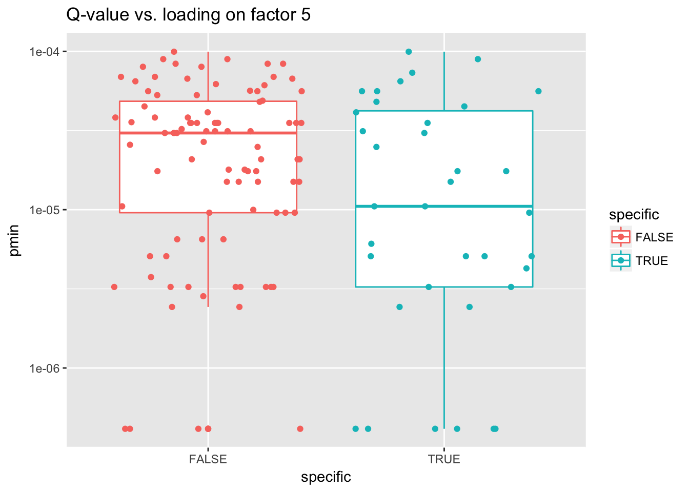
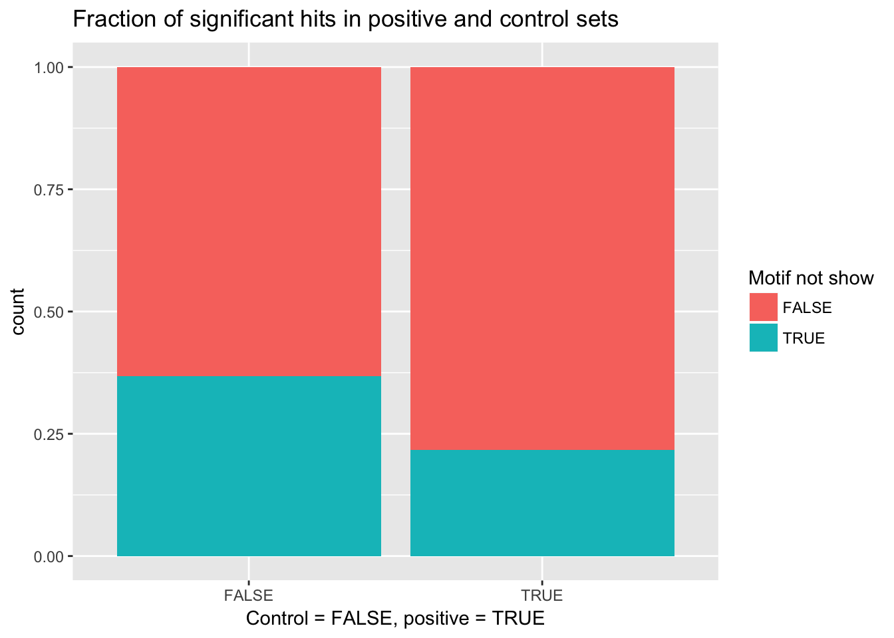

source('../scripts/mylib.R')
library(ggplot2)
library(dplyr)
library(BSgenome.Hsapiens.UCSC.hg19)
library(seqinr)
set.seed(2018)In this section, the motif analysis on the promoters of the genes with strong loading on “heart factor” is performed. The motivation is to see whether “tissue-specific” (strong loading on “heart factor”) eQTL is driven by tissue-specific promoter.
flash <- readRDS('../output/gtex_flash.rds')
eqtl_annotated <- read.table('../output/strong_eqtl_annotated.txt.gz', header = T)
eqtl_annotated.dup <- duplicated(eqtl_annotated$ensembl_gene_id)
eqtl_annotated <- eqtl_annotated[!eqtl_annotated.dup, ]Promoter is defined as the 1 kb region upstream of TSS.
window.size <- 1000
l.five <- flash$EL[, 5]
l.one <- flash$EL[, 1]
l.five <- l.five[eqtl_annotated$idx]
l.one <- l.one[eqtl_annotated$idx]
eqtl_annotated$loading_5 <- l.five
eqtl_annotated$loading_1 <- l.one
df.sub <- eqtl_annotated[(abs(eqtl_annotated$loading_5) > 5 & abs(eqtl_annotated$loading_1) < 1) | (abs(eqtl_annotated$loading_5) < 1 & abs(eqtl_annotated$loading_1) > 50), ]
df.sub$specific <- TRUE
df.sub$specific[(abs(df.sub$loading_5) < 1 & abs(df.sub$loading_1) > 50)] <- FALSE
df.sub$tss <- df.sub$transcript_start
df.sub$tss[df.sub$strand == -1] <- df.sub$transcript_end[df.sub$strand == -1]
tss_up1kb <- df.sub$tss - df.sub$strand * window.size
df.sub$tss_big <- df.sub$tss
df.sub$tss_big[df.sub$strand == -1] <- tss_up1kb[df.sub$strand == -1]
df.sub$tss_small <- tss_up1kb
df.sub$tss_small[df.sub$strand == -1] <- df.sub$tss[df.sub$strand == -1]
df.sub$seq <- getFasta(data.frame(paste0('chr', df.sub$chromosome_name), df.sub$tss_small, df.sub$tss_big), BSgenome.Hsapiens.UCSC.hg19)
df.sub.pos <- df.sub[df.sub$specific, ]
write.fasta(as.list(df.sub.pos$seq), df.sub.pos$idx, file.out = '../output/motif_analysis_factor_five.positive.fa')
df.sub.neg <- df.sub[!df.sub$specific, ]
write.fasta(as.list(df.sub.neg$seq), df.sub.neg$idx, file.out = '../output/motif_analysis_factor_five.negative.fa')AME performs enrichment analysis by comparing the occurence of motif between positive sequence set and control sequence set. Here, the motifs are from motif database, HOCOMOCOv11 full HUMAN. See output file here
The relation of TFDP1 and heart/muscle tissue is not found but TFDP2 shows high expression level in muscle and heart tissue. Also, TFDP2 is involved in heart development (related to cell cycle).
No evidence has been found.
(Flesch 2001) reported that sp1 is involved in the tissue-specific activation of promoter.
Many studies have shown that EGR1 plays a role in cardic myocyte.
FIMO scans and scores the sequences by given motif. Here, sp1 is used (JASPAR ID MA0079.1).
pos <- read.table('../output/fimo_f5.positive.tsv', header = T)
neg <- read.table('../output/fimo_f5.negative.tsv', header = T)
pos.pmin <- pos %>% group_by(sequence_name) %>%
summarise(score = min(p.value))
neg.pmin <- neg %>% group_by(sequence_name) %>%
summarise(score = min(p.value))
df.sub.order <- df.sub[order(df.sub$idx, decreasing = F), ]
pos.pmin <- pos.pmin[order(pos.pmin$sequence_name, decreasing = F), ]
neg.pmin <- neg.pmin[order(neg.pmin$sequence_name, decreasing = F), ]
df.sub.order$pmin <- NA
df.sub.order$pmin[df.sub.order$idx %in% pos.pmin$sequence_name] <- pos.pmin$score
df.sub.order$pmin[df.sub.order$idx %in% neg.pmin$sequence_name] <- neg.pmin$score
ggplot(df.sub.order) + geom_boxplot(aes(x = specific, y = pmin, color = specific)) + scale_y_log10() + ggtitle('Q-value vs. loading on factor 5') + geom_jitter(aes(x = specific, y = pmin, color = specific), height = 0)## Warning: Removed 63 rows containing non-finite values (stat_boxplot).## Warning: Removed 63 rows containing missing values (geom_point).
wilcox.test(df.sub.order$pmin[df.sub.order$specific], df.sub.order$pmin[!df.sub.order$specific], alternative = 'l')##
## Wilcoxon rank sum test with continuity correction
##
## data: df.sub.order$pmin[df.sub.order$specific] and df.sub.order$pmin[!df.sub.order$specific]
## W = 1268, p-value = 0.02392
## alternative hypothesis: true location shift is less than 0ggplot(df.sub.order) + geom_bar(aes(group = is.na(pmin), x = specific, fill = is.na(pmin)), position = "fill") + ggtitle('Fraction of significant hits in positive and control sets') + labs(fill = 'Motif not show', x = 'Control = FALSE, positive = TRUE')
The result indicates that the promoter region of factor 5 specific genes have significantly more sp1 binding sites than general eQTLs (strong loading on 1 but weak loading on 5). So, it seems that the tissue-specific eQTLs for factor 5 are indeed controlled by tissue-specific TFs but it is still questionable about how it is regulated (by promoter or chromatin looping mediated promoter-enhancer interaction). The distance analysis gives no pattern (see here).
Flesch, Markus. 2001. “On the Trail of Cardiac Specific Transcription Factors.” Elsevier Science.